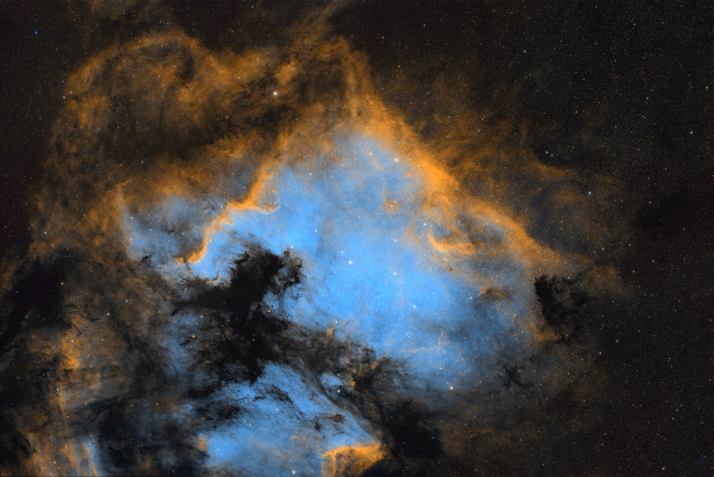

Observing journal · Entry 01
Learning the colours of the cosmos.
My journey into the SHO Hubble palette: learning from others, working with my own images, and finding the final balance of colour.

Learning, one image at a time
YouTube has been a big part of my learning. Watching other astrophotographers explain their processing helped me explore the SHO Hubble palette and apply those ideas to my own images.
I mainly work in Siril, alongside SETI Astro Suite Pro and RC-Astro plugins. I use Affinity for the final touches. Together, these tools form part of my process for bringing the image towards the result I want.
What I have been learning: how the SHO palette turns sulfur, hydrogen and oxygen data into a different way of seeing a nebula.
What SHO means
In the standard SHO mapping, sulfur II is assigned to red, hydrogen-alpha to green, and oxygen III to blue. These are assigned display colours, not how the nebula would appear to the unaided eye.
This explains the palette convention; it does not document the exact channel extraction or mixing settings used for this photograph.
Read NASA's explanation of Hubble colour assignments ↗
My processing tools
- Siril
- SETI Astro Suite Pro
- RC-Astro plugins
- Affinity
This journal is a place to share that learning alongside the photographs: the tools I use, the ideas I discover, and the images that come from putting them into practice.
The image in motion
A short showcase.
Watch my accompanying film with its original audio. Press play when you are ready, and use fullscreen for a closer look.
The date above is the journal-entry date, not the image-capture date.